Apps para aprender y jugar
Somos MJCStudio, un pequeño estudio independiente de desarrollo de software y aplicaciones, con sede en España. Todo empezó como un hobby en casa, en familia. Hacemos apps cuidadas, sin anuncios y sin recoger datos, para pasar buenos ratos juntos y aprender sin darse cuenta.
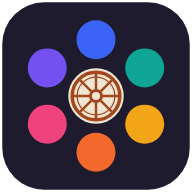
Rondalia
Momentos de calidad que caben en un móvil
Cualquier rato es bueno para jugar juntos: la sobremesa, un viaje en coche, la espera en un restaurante, una tarde de lluvia o una reunión con amigos. Saca el móvil y empieza la partida, en familia, con amigos o tú solo. Un solo móvil que se va pasando, o una tableta en el centro de la mesa, sin internet, sin cuentas y sin que nadie tenga que leer instrucciones: abuelos, padres y peques juegan juntos, cada uno a su nivel.
Cuatro grupos de edad (5–7, 8–11, 12–15 y 16+). En la misma partida, el peque recibe su pregunta y el abuelo la suya.
Desde preguntas y mímica hasta el abecedario, banderas o palabra prohibida. Cambiad de juego cuando queráis o dejad que «La rueda elige» decida en cada turno: el marcador suma los puntos de todos. ¿No sabéis a qué jugar? «Ayúdame a elegir» os propone juegos con tres preguntas rápidas.
¿Con niños pequeños o sin ganas de competir? Elegid «Todos juntos»: un solo equipo, sin nombres, con el nivel de edad que queráis. Responded entre todos y superad el reto: 20 aciertos antes de 5 fallos.
Guarda hasta 50 jugadores y jugad todos a la vez, sin límite por juego. En las partidas grandes, El despistado tiene varios despistados que se descubren ronda a ronda.
Duplica la pantalla del móvil o la tableta en la tele y jugad todos viéndola en grande.
¿Sois dos? En Palabrea, Cálculo, Adivina el número y Llega al número jugáis a la vez con la pantalla dividida, cada uno con el reto de su nivel. Gana quien lo resuelva antes.
Más de 2.000 preguntas por idioma, cientos de palabras, mímicas y categorías, y todo el contenido revisado para que sea apto para niños. En Ajustes ves cuánto contenido tiene cada juego.
Preguntas, Abecedario, Letra al vuelo, Palabrea, Adivina la palabra, Cálculo, Banderas, Adivina el número y Llega al número sirven para practicar y aprender con un solo jugador. Con el reto de partida y tu récord de aciertos seguidos, siempre hay algo que superar.
La app lleva los puntos, los turnos y el tiempo, para que vosotros solo os preocupéis de pasarlo bien, en familia o con amigos.
No todo es competir: ¿Qué prefieres?, Conocernos e Historia encadenada abren conversaciones para descubrir gustos, recuerdos y anécdotas de los demás.
Rondalia se actualiza con frecuencia: juegos nuevos, más preguntas y sets gratis para las fechas especiales del año, con su propio estilo visual. La app te avisa de cada versión nueva y te cuenta sus novedades, y desde ella puedes sugerirnos juegos.
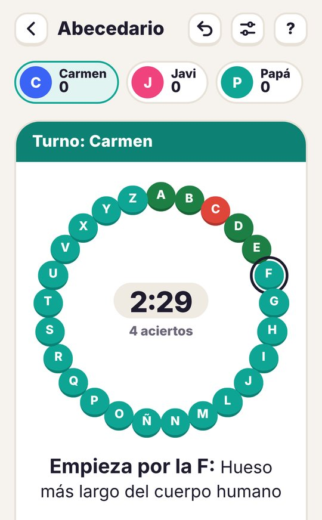
Los juegos
En español, inglés, francés, alemán y portugués, con preguntas adaptadas a cada país. Edición de lanzamiento: ahora gratis y completa, sin compras. Descárgala ahora y tenla completa para siempre.
¿Por qué «Rondalia»? Viene de «ronda»: jugar por turnos, en corro. Y la «o» del logo es una rota, una rueda de juego que los antiguos romanos grababan en las escaleras de foros y templos para jugar en grupo. Casi dos mil años después, la idea sigue siendo la misma: un tablero, varios jugadores y cada uno en su turno.
Novedades, juegos nuevos y sets de temporada en 𝕏 @Rondalia · 📷 rondalia.app
📱 Descárgala en iPhone y iPad
Ya está en la App Store: gratis y completa, sin anuncios.
🧪 Prueba la beta en Android
Estamos en prueba cerrada en Google Play. 1) Escríbenos a rondalia@mjcstudio.com con el Gmail que usas en tu móvil Android y te añadimos. 2) Únete con uno de estos enlaces y descárgala.
Solo para móviles Android con Google Play. Usa la misma cuenta de Gmail que nos diste.
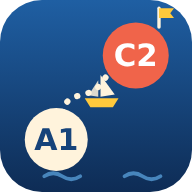
Lexpedition
Rumbo fijo: aprobar tu examen
Lexpedition convierte la preparación de tu examen oficial de idiomas en una travesía por el mar, y el puerto de destino es el aprobado. Cada lección es una isla que conquistar y cada expresión que dominas es una milla menos hasta la meta. Con cinco o diez minutos al día llegarás al examen con el vocabulario que más se resiste.
Prepara inglés, alemán, francés o español, del nivel A1 al C2 del Marco Común Europeo. Puedes estudiar varios a la vez.
Verbos con partícula o preposición (phrasal verbs, trennbare Verben…), expresiones idiomáticas y colocaciones, con frases de ejemplo reales.
Elige tu rumbo entre islas misteriosas, despeja la niebla y planta tu bandera. Asciende de Grumete a Almirante.
Tarjetas, elegir la partícula, completar huecos y unir parejas, con repetición espaciada para que no se olvide lo aprendido.
Test diario con nota, racha, meta de XP, misiones e insignias. Ideal para crear el hábito.
La app habla español, inglés, francés o alemán, y los significados pueden salir traducidos a tu idioma o como definición.
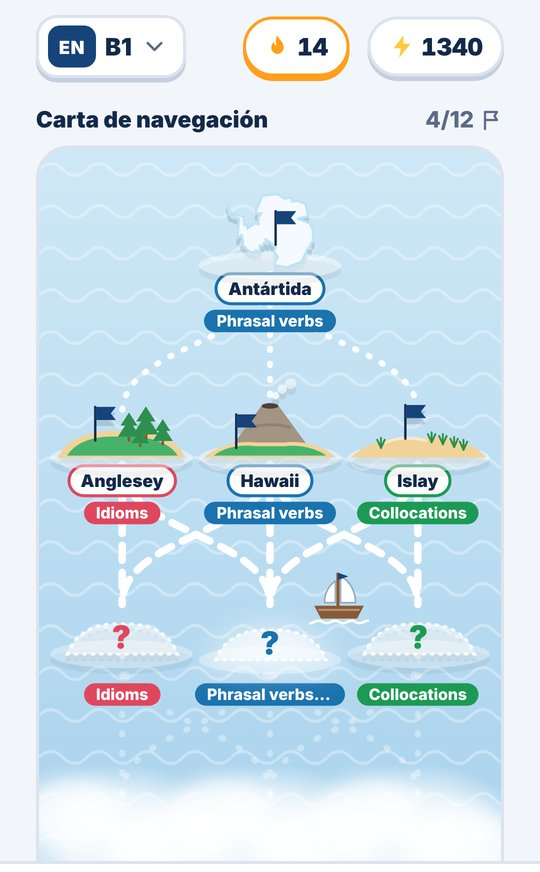
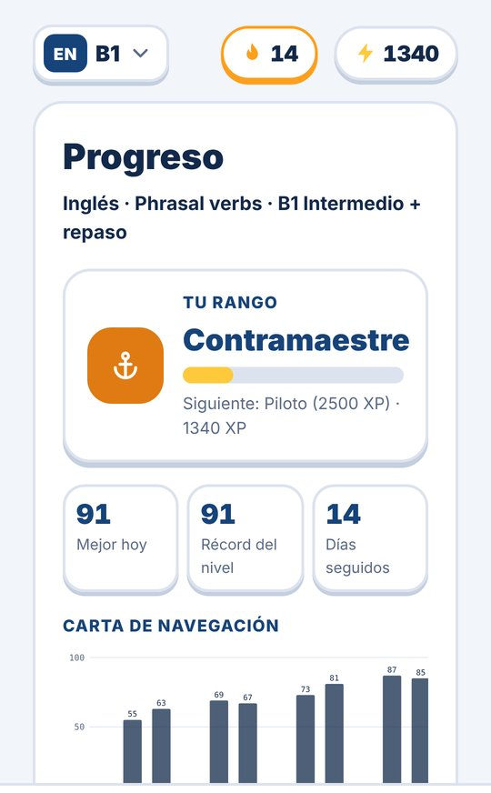
Para cualquier edad: desde niños que preparan su primer certificado hasta adultos. Funciona en móvil y tableta, con varios perfiles en el mismo dispositivo. Edición de lanzamiento: ahora gratis y completa, con los cuatro idiomas y todos los niveles. Descárgala ahora y tenla completa para siempre.
📱 Descárgala en iPhone y iPad
Ya está en la App Store: gratis y completa, sin anuncios.
🧪 Prueba la beta en Android
Estamos en prueba cerrada en Google Play. 1) Escríbenos a lexpedition@mjcstudio.com con el Gmail que usas en tu móvil Android y te añadimos. 2) Únete con uno de estos enlaces y descárgala.
Solo para móviles Android con Google Play. Usa la misma cuenta de Gmail que nos diste.
Nuestro compromiso
- Sin anuncios, nunca.
- Sin cuentas ni registro.
- Para móvil y tableta: Android, iPhone y iPad.
- No recogemos datos personales: todo se guarda en tu dispositivo.
- Aptas para menores: compras y enlaces protegidos con una pregunta para adultos.
- Compra única opcional, sin suscripciones.
¿Dudas o ideas? Escríbenos a soporte@mjcstudio.com
Síguenos en X e Instagram para conocer las novedades: 𝕏 @MJCStudioApp · 📷 mjcstudio.app · 𝕏 @Rondalia · 📷 rondalia.app
💡 Sugiere una app
¿Echas en falta alguna app para aprender o jugar? Cuéntanos tu idea: leemos todas las propuestas.
Apps to learn and play
We are MJCStudio, a small independent software and app development studio based in Spain. It all started as a hobby at home, as a family. We make carefully crafted apps with no ads and no data collection, for great times together and learning without noticing.
Rondalia
Quality time that fits in one phone
Any moment is a good moment to play together: after a meal, on a car trip, waiting at a restaurant, on a rainy afternoon or with friends. Bring out your phone and start playing, with family, with friends or on your own. One phone passed around, or a tablet in the middle of the table, no internet, no accounts and no rules to read: grandparents, parents and kids play together, each at their own level.
Four age groups (5–7, 8–11, 12–15 and 16+). In the same game, the little one gets their question and grandpa gets his.
From quiz and charades to the alphabet wheel, flags or forbidden words. Switch games whenever you like or let “Spin the wheel” decide each turn: the scoreboard adds up the points from all of them. Not sure what to play? “Help me choose” asks three quick questions and suggests games.
Playing with young kids, or just not in the mood to compete? Choose “All together”: one team, no names, at the age level you pick. Answer together and beat the challenge: 20 correct answers before 5 misses.
Save up to 50 players and play all together, with no limit per game. In big games, The Clueless One has several clueless ones, found round by round.
Mirror your phone or tablet screen to the TV and everyone plays on the big screen.
Just the two of you? In Wordsmithing, Mental Math, Guess the Number and Reach the Number you play at the same time on a split screen, each with a challenge at your own level. Whoever solves it first wins.
Over 2,000 questions per language, hundreds of words, charades and categories, all checked to be child-friendly. Settings shows how much content each game has.
Quiz, Alphabet Wheel, Letter Rush, Wordsmithing, Guess the Word, Mental Math, Flags, Guess the Number and Reach the Number are great for practising and learning on your own. With the game challenge and your record of correct answers in a row, there's always something to beat.
The app keeps the score, turns and time, so all you have to do is have fun, with family or friends.
It is not all about winning: Would You Rather?, Get to Know You and Story Chain spark conversations to discover the tastes, memories and stories of the people around you.
Rondalia is updated often: new games, more questions and free sets for special times of the year, each with its own visual style. The app lets you know about each new version and what is new, and you can suggest games from it.
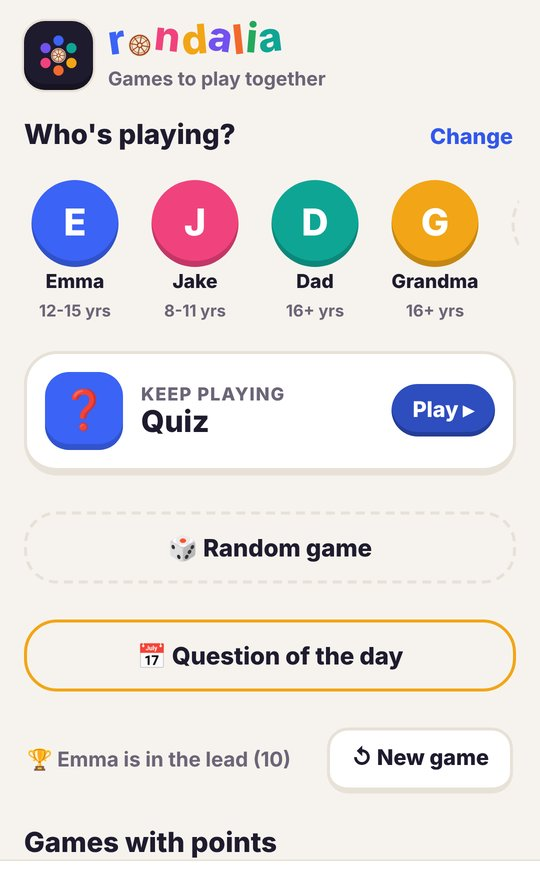
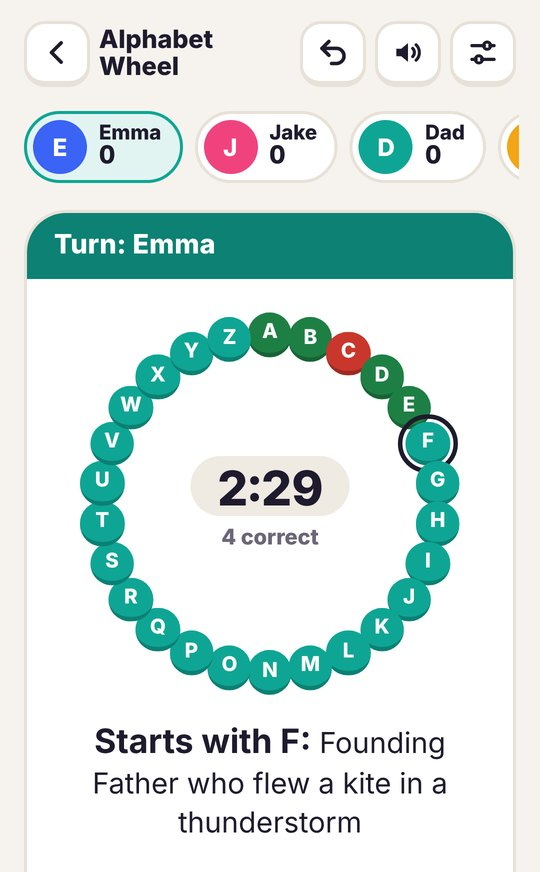
The games
In English, Spanish, French, German and Portuguese, with questions adapted to each country. Launch edition: free and complete right now, no purchases. Download it now and keep the full version forever.
Why “Rondalia”? It comes from the Spanish “ronda”, a round: playing in turns, sitting in a circle. And the “o” in the logo is a rota, a game wheel the ancient Romans carved into the steps of forums and temples to play together. Nearly two thousand years later, the idea is the same: one board, several players, everyone taking turns.
News, new games and seasonal sets on 𝕏 @Rondalia · 📷 rondalia.app
📱 Get it on iPhone and iPad
Now on the App Store: free and complete, with no ads.
🧪 Try the beta on Android
We're in a closed test on Google Play. 1) Email rondalia@mjcstudio.com with the Gmail you use on your Android phone and we'll add you. 2) Join with one of these links and download it.
Android phones with Google Play only. Use the same Gmail account you gave us.
Lexpedition
Set your course for passing your exam
Lexpedition turns preparing for your official language exam into a voyage across the sea, and the destination port is a pass. Each lesson is an island to conquer and every expression you master is one mile closer to the goal. With five or ten minutes a day you will reach exam day with the vocabulary that resists the most.
Prepare English, German, French or Spanish, from A1 to C2 of the Common European Framework. You can study several at once.
Phrasal verbs, verbs with prepositions (trennbare Verben…), idioms and collocations, with real example sentences.
Choose your course among mystery islands, clear the fog and plant your flag. Rise from Deckhand to Admiral.
Flashcards, pick the particle, fill the gaps and match pairs, with spaced repetition so you don't forget.
Daily test with a score, streaks, XP goal, missions and badges. Perfect to build the habit.
The app speaks English, Spanish, French or German, and meanings can be shown as translations or definitions.


For every age: from children preparing their first certificate to adults. Works on phones and tablets, with several profiles on the same device. Launch edition: free and complete right now, with all four languages and every level. Download it now and keep the full version forever.
📱 Get it on iPhone and iPad
Now on the App Store: free and complete, with no ads.
🧪 Try the beta on Android
We're in a closed test on Google Play. 1) Email lexpedition@mjcstudio.com with the Gmail you use on your Android phone and we'll add you. 2) Join with one of these links and download it.
Android phones with Google Play only. Use the same Gmail account you gave us.
Our promise
- No ads, ever.
- No accounts or sign-up.
- For phones and tablets: Android, iPhone and iPad.
- We don't collect personal data: everything stays on your device.
- Child-friendly: purchases and links are protected by a question for adults.
- Optional one-time purchase, no subscriptions.
Questions or ideas? Write to soporte@mjcstudio.com
Follow us on X and Instagram for news: 𝕏 @MJCStudioApp · 📷 mjcstudio.app · 𝕏 @Rondalia · 📷 rondalia.app
💡 Suggest an app
Is there an app for learning or playing that you wish existed? Tell us your idea: we read every suggestion.
Des applis pour apprendre et jouer
Nous sommes MJCStudio, un petit studio indépendant de développement de logiciels et d'applications, basé en Espagne. Tout a commencé comme un passe-temps à la maison, en famille. Nous créons des applis soignées, sans publicité et sans collecte de données, pour passer de bons moments ensemble et apprendre sans s'en rendre compte.
Rondalia
Des moments de qualité qui tiennent dans un téléphone
Tous les moments sont bons pour jouer ensemble : après le repas, en voiture, en attendant au restaurant, un après-midi de pluie ou entre amis. Sors ton téléphone et la partie commence, en famille, entre amis ou en solo. Un seul téléphone qui passe de main en main, ou une tablette au centre de la table, sans internet, sans compte et sans règles à lire : grands-parents, parents et enfants jouent ensemble, chacun à son niveau.
Quatre tranches d'âge (5–7, 8–11, 12–15 et 16+). Dans la même partie, le petit a sa question et le grand-père la sienne.
Du quiz et du mime à la roue de l'alphabet, aux drapeaux ou aux mots interdits. Changez de jeu quand vous voulez ou laissez « La roue décide » choisir à chaque tour : le tableau des scores additionne tous les points. Vous ne savez pas à quoi jouer ? « Aide-moi à choisir » pose trois questions rapides et vous propose des jeux.
Avec de jeunes enfants ou sans envie de compétition ? Choisissez « Tous ensemble » : une seule équipe, sans prénoms, au niveau d'âge de votre choix. Répondez ensemble et relevez le défi : 20 bonnes réponses avant 5 erreurs.
Enregistre jusqu'à 50 joueurs et jouez tous ensemble, sans limite par jeu. Dans les grandes parties, Le Distrait compte plusieurs distraits, démasqués manche après manche.
Duplique l'écran du téléphone ou de la tablette sur la télé et jouez tous en grand.
Vous êtes deux ? Dans Motine, Calcul mental, Devine le nombre et Atteins le nombre, jouez en même temps sur écran partagé, chacun avec un défi à son niveau. Le premier qui trouve gagne.
Plus de 2 000 questions par langue, des centaines de mots, de mimes et de catégories, tout vérifié pour convenir aux enfants. Les Réglages montrent le contenu de chaque jeu.
Quiz, Roue de l'alphabet, Lettre éclair, Motine, Devine le mot, Calcul mental, Drapeaux, Devine le nombre et Atteins le nombre permettent de s'entraîner et d'apprendre en solo. Avec le défi de partie et ton record de bonnes réponses d'affilée, il y a toujours quelque chose à battre.
L'appli compte les points, les tours et le temps : vous n'avez plus qu'à vous amuser, en famille ou entre amis.
Il n'y a pas que la compétition : Tu préfères ?, Faisons connaissance et Histoire à la chaîne lancent des conversations pour découvrir les goûts, les souvenirs et les anecdotes des autres.
Rondalia est mise à jour souvent : nouveaux jeux, plus de questions et packs gratuits pour les moments forts de l'année, chacun avec son propre style visuel. L'appli te prévient à chaque nouvelle version et te présente ses nouveautés, et tu peux nous y proposer des jeux.
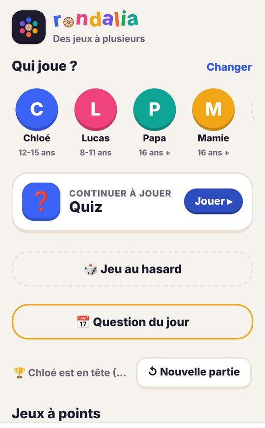
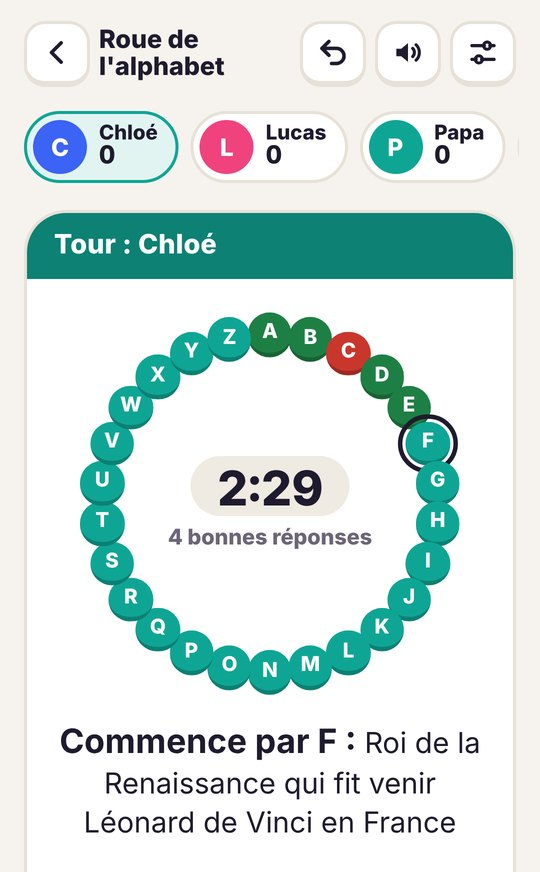
Les jeux
En français, espagnol, anglais, allemand et portugais, avec des questions adaptées à chaque pays. Édition de lancement : gratuite et complète en ce moment, sans achat. Télécharge-la maintenant et garde la version complète pour toujours.
Pourquoi « Rondalia » ? Le nom vient de l’espagnol « ronda », la ronde : jouer chacun son tour, en cercle. Et le « o » du logo est une rota, une roue de jeu que les Romains gravaient sur les marches des forums et des temples pour jouer ensemble. Près de deux mille ans plus tard, l’idée reste la même : un plateau, plusieurs joueurs, chacun son tour.
Nouveautés, nouveaux jeux et sets de saison sur 𝕏 @Rondalia · 📷 rondalia.app
📱 Télécharge-la sur iPhone et iPad
Disponible sur l'App Store : gratuite et complète, sans pub.
🧪 Teste la bêta sur Android
Nous sommes en test fermé sur Google Play. 1) Écris-nous à rondalia@mjcstudio.com avec le Gmail de ton téléphone Android et nous t'ajoutons. 2) Rejoins le test avec l'un de ces liens et télécharge l'appli.
Uniquement pour les téléphones Android avec Google Play. Utilise le même compte Gmail.
Lexpedition
Cap sur la réussite de ton examen
Lexpedition transforme la préparation de ton examen officiel de langue en une traversée en mer, et le port d'arrivée, c'est la réussite. Chaque leçon est une île à conquérir et chaque expression maîtrisée est un mille de moins vers le but. Avec cinq ou dix minutes par jour, tu arriveras à l'examen avec le vocabulaire qui résiste le plus.
Prépare l'anglais, l'allemand, le français ou l'espagnol, du niveau A1 au C2 du Cadre européen commun. Tu peux en étudier plusieurs.
Verbes à particule ou à préposition (phrasal verbs, trennbare Verben…), expressions idiomatiques et collocations, avec de vraies phrases d'exemple.
Choisis ton cap parmi des îles mystérieuses, dissipe le brouillard et plante ton drapeau. Grimpe de Mousse à Amiral.
Cartes, choix de la particule, textes à trous et paires, avec répétition espacée pour ne pas oublier.
Test du jour noté, série, objectif d'XP, missions et badges. Idéal pour prendre l'habitude.
L'appli parle français, espagnol, anglais ou allemand, et les sens s'affichent en traduction ou en définition.
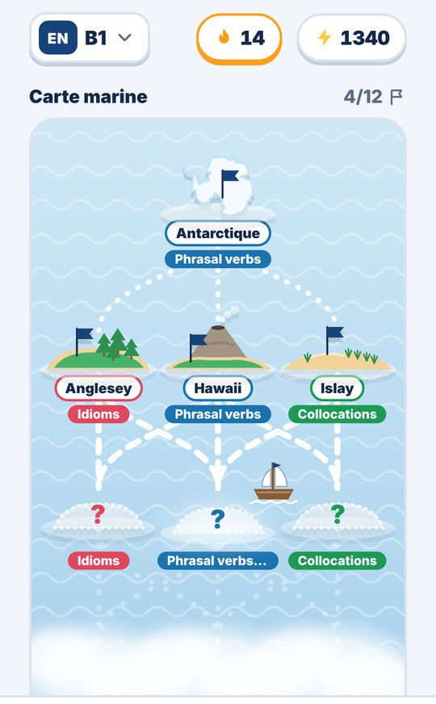
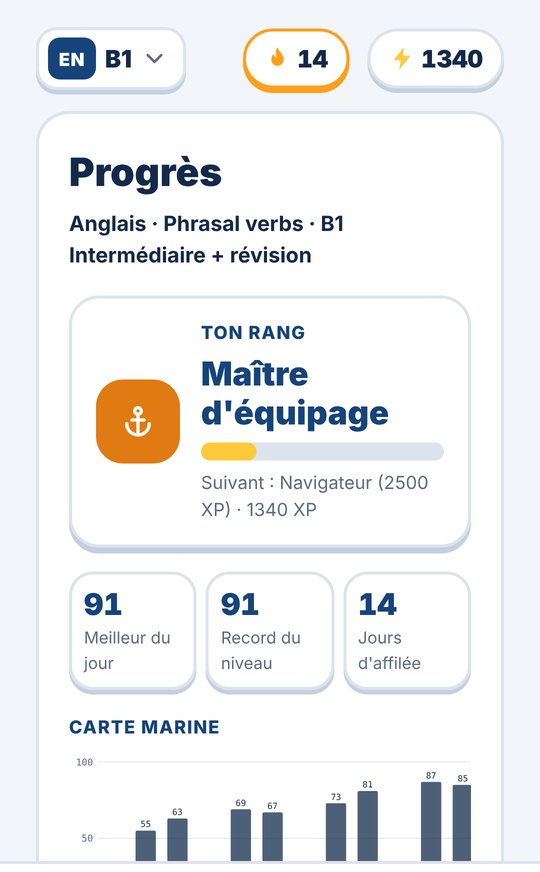
Pour tous les âges : des enfants qui préparent leur premier diplôme aux adultes. Fonctionne sur téléphone et tablette, avec plusieurs profils sur le même appareil. Édition de lancement : gratuite et complète en ce moment, avec les quatre langues et tous les niveaux. Télécharge-la maintenant et garde la version complète pour toujours.
📱 Télécharge-la sur iPhone et iPad
Disponible sur l'App Store : gratuite et complète, sans pub.
🧪 Teste la bêta sur Android
Nous sommes en test fermé sur Google Play. 1) Écris-nous à lexpedition@mjcstudio.com avec le Gmail de ton téléphone Android et nous t'ajoutons. 2) Rejoins le test avec l'un de ces liens et télécharge l'appli.
Uniquement pour les téléphones Android avec Google Play. Utilise le même compte Gmail.
Notre engagement
- Pas de publicité, jamais.
- Pas de compte ni d'inscription.
- Pour téléphone et tablette : Android, iPhone et iPad.
- Aucune donnée personnelle collectée : tout reste sur ton appareil.
- Adapté aux enfants : achats et liens protégés par une question pour adultes.
- Achat unique facultatif, sans abonnement.
Une question, une idée ? Écris-nous à soporte@mjcstudio.com
Suis-nous sur X et Instagram pour les nouveautés : 𝕏 @MJCStudioApp · 📷 mjcstudio.app · 𝕏 @Rondalia · 📷 rondalia.app
💡 Propose une appli
Il te manque une appli pour apprendre ou jouer ? Raconte-nous ton idée : nous lisons toutes les propositions.
Apps zum Lernen und Spielen
Wir sind MJCStudio, ein kleines unabhängiges Studio für Software- und App-Entwicklung aus Spanien. Alles begann als Hobby zu Hause, in der Familie. Wir machen liebevoll gestaltete Apps ohne Werbung und ohne Datensammlung – für schöne Stunden miteinander und Lernen ganz nebenbei.
Rondalia
Wertvolle gemeinsame Momente, die in ein Handy passen
Jeder Moment ist gut, um gemeinsam zu spielen: nach dem Essen, auf der Autofahrt, beim Warten im Restaurant, an einem Regennachmittag oder mit Freunden. Handy raus – und los geht's, mit der Familie, mit Freunden oder allein. Ein Handy, das herumgereicht wird, oder ein Tablet in der Mitte des Tisches, ohne Internet, ohne Konto und ohne Anleitung lesen: Großeltern, Eltern und Kinder spielen zusammen, jeder auf seinem Niveau.
Vier Altersgruppen (5–7, 8–11, 12–15 und 16+). Im selben Spiel bekommt das Kind seine Frage und der Opa seine.
Von Quiz und Pantomime bis Buchstabenrad, Flaggen oder verbotene Wörter. Wechselt das Spiel, wann ihr wollt, oder lasst „Das Rad entscheidet“ in jeder Runde wählen: Die Punktetabelle zählt alles zusammen. Ihr wisst nicht, was ihr spielen sollt? „Hilf mir wählen“ stellt drei kurze Fragen und schlägt Spiele vor.
Mit kleinen Kindern oder einfach ohne Lust auf Wettkampf? Wählt „Alle zusammen“: ein Team, ohne Namen, auf der Altersstufe, die ihr wollt. Antwortet gemeinsam und schafft die Herausforderung: 20 richtige Antworten vor 5 Fehlern.
Speichere bis zu 50 Spieler und spielt alle zusammen, ohne Begrenzung pro Spiel. In großen Runden gibt es bei Der Ahnungslose mehrere Ahnungslose, die Runde für Runde entlarvt werden.
Spiegle den Bildschirm von Handy oder Tablet auf den Fernseher und alle spielen auf dem großen Bildschirm.
Nur ihr zwei? In Wörteln, Kopfrechnen, Zahlenraten und Triff die Zahl spielt ihr gleichzeitig auf geteiltem Bildschirm, jeder mit einer Aufgabe auf seinem Niveau. Wer sie zuerst löst, gewinnt.
Über 2.000 Fragen pro Sprache, Hunderte Wörter, Pantomimen und Kategorien – alles kindgerecht geprüft. In den Einstellungen siehst du, wie viel Inhalt jedes Spiel hat.
Quiz, Buchstabenrad, Buchstabenblitz, Wörteln, Wörterraten, Kopfrechnen, Flaggen, Zahlenraten und Triff die Zahl eignen sich zum Üben und Lernen mit nur einem Spieler. Mit der Herausforderung und deinem Rekord an richtigen Antworten in Folge gibt es immer etwas zu schlagen.
Die App zählt Punkte, Runden und Zeit – ihr müsst nur noch Spaß haben, mit der Familie oder mit Freunden.
Es geht nicht nur ums Gewinnen: Was wäre dir lieber?, Kennenlernen und Kettengeschichte bringen Gespräche in Gang, in denen ihr Vorlieben, Erinnerungen und Anekdoten der anderen entdeckt.
Rondalia wird regelmäßig aktualisiert: neue Spiele, mehr Fragen und kostenlose Pakete für besondere Zeiten im Jahr, jeweils mit eigenem Stil. Die App sagt dir bei jeder neuen Version Bescheid und zeigt, was neu ist, und du kannst uns darin Spiele vorschlagen.
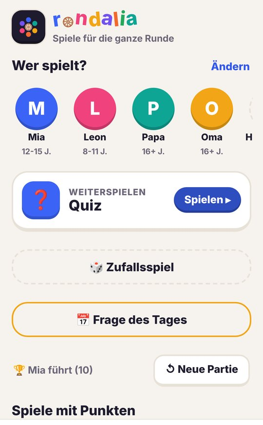
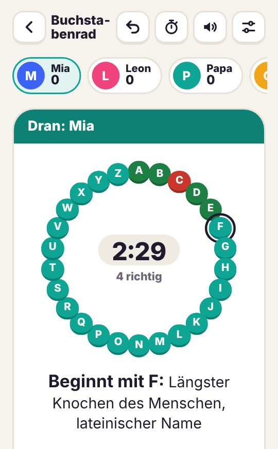
Die Spiele
Auf Deutsch, Spanisch, Englisch, Französisch und Portugiesisch, mit Fragen für jedes Land. Launch-Edition: aktuell kostenlos und komplett, ohne Käufe. Jetzt herunterladen und die Vollversion für immer behalten.
Warum „Rondalia“? Der Name kommt vom spanischen „ronda“, der Runde: reihum spielen, im Kreis. Und das „o“ im Logo ist eine Rota, ein Spielrad, das die alten Römer in die Stufen von Foren und Tempeln ritzten, um gemeinsam zu spielen. Fast zweitausend Jahre später ist die Idee dieselbe: ein Spielbrett, mehrere Spieler, alle reihum.
Neuigkeiten, neue Spiele und Saison-Sets auf 𝕏 @Rondalia · 📷 rondalia.app
📱 Lade sie auf iPhone und iPad
Jetzt im App Store: kostenlos und komplett, ohne Werbung.
🧪 Teste die Beta auf Android
Wir sind im geschlossenen Test bei Google Play. 1) Schreib uns an rondalia@mjcstudio.com mit dem Gmail-Konto deines Android-Handys, dann fügen wir dich hinzu. 2) Tritt über einen dieser Links bei und lade die App herunter.
Nur für Android-Handys mit Google Play. Verwende dasselbe Gmail-Konto.
Lexpedition
Kurs auf deine bestandene Prüfung
Lexpedition macht aus der Vorbereitung auf deine offizielle Sprachprüfung eine Reise übers Meer – und der Zielhafen ist das Bestehen. Jede Lektion ist eine Insel, die du eroberst, und jeder Ausdruck, den du beherrschst, ist eine Seemeile näher am Ziel. Mit fünf bis zehn Minuten am Tag gehst du mit genau dem Wortschatz in die Prüfung, der am schwersten fällt.
Bereite dich auf Englisch, Deutsch, Französisch oder Spanisch vor, von A1 bis C2 des Gemeinsamen Europäischen Referenzrahmens. Auch mehrere gleichzeitig.
Partikelverben und Verben mit Präposition (phrasal verbs, trennbare Verben…), Redewendungen und Kollokationen, mit echten Beispielsätzen.
Wähle deinen Kurs zwischen geheimnisvollen Inseln, vertreibe den Nebel und hisse deine Flagge. Steige vom Schiffsjungen zum Admiral auf.
Karteikarten, Partikel wählen, Lücken füllen und Paare bilden – mit verteilter Wiederholung, damit nichts vergessen wird.
Tagestest mit Note, Serie, XP-Ziel, Missionen und Abzeichen. Ideal, um dranzubleiben.
Die App spricht Deutsch, Spanisch, Englisch oder Französisch, und Bedeutungen erscheinen als Übersetzung oder Definition.
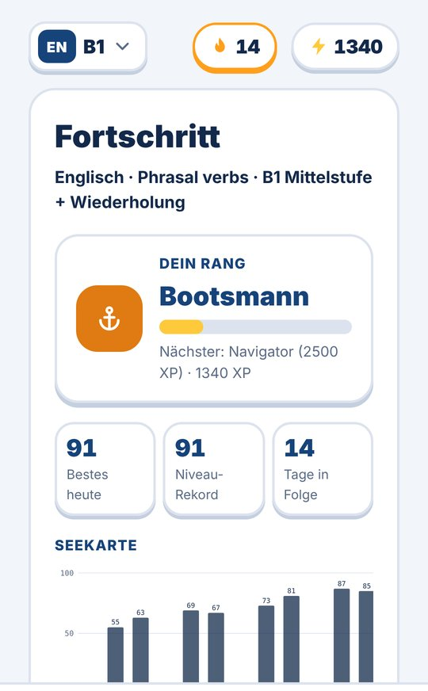
Für jedes Alter: von Kindern vor ihrem ersten Zertifikat bis zu Erwachsenen. Läuft auf Handy und Tablet, mit mehreren Profilen auf einem Gerät. Launch-Edition: aktuell kostenlos und komplett, mit allen vier Sprachen und allen Niveaus. Jetzt herunterladen und die Vollversion für immer behalten.
📱 Lade sie auf iPhone und iPad
Jetzt im App Store: kostenlos und komplett, ohne Werbung.
🧪 Teste die Beta auf Android
Wir sind im geschlossenen Test bei Google Play. 1) Schreib uns an lexpedition@mjcstudio.com mit dem Gmail-Konto deines Android-Handys, dann fügen wir dich hinzu. 2) Tritt über einen dieser Links bei und lade die App herunter.
Nur für Android-Handys mit Google Play. Verwende dasselbe Gmail-Konto.
Unser Versprechen
- Keine Werbung, niemals.
- Für Handy und Tablet: Android, iPhone und iPad.
- Kein Konto, keine Anmeldung.
- Wir sammeln keine personenbezogenen Daten: Alles bleibt auf deinem Gerät.
- Kindgerecht: Käufe und Links sind durch eine Frage für Erwachsene geschützt.
- Optionaler Einmalkauf, kein Abo.
Fragen oder Ideen? Schreib uns an soporte@mjcstudio.com
Folge uns auf X und Instagram für Neuigkeiten: 𝕏 @MJCStudioApp · 📷 mjcstudio.app · 𝕏 @Rondalia · 📷 rondalia.app
💡 App vorschlagen
Fehlt dir eine App zum Lernen oder Spielen? Erzähl uns deine Idee – wir lesen jeden Vorschlag.
Apps para aprender e jogar
Somos a MJCStudio, um pequeno estúdio independente de desenvolvimento de software e aplicações, sediado em Espanha. Tudo começou como um passatempo em casa, em família. Fazemos apps cuidadas, sem anúncios e sem recolher dados, para passar bons momentos juntos e aprender sem dar por isso.
Rondalia
Momentos que valem a pena, num só telemóvel
Qualquer momento é bom para jogar juntos: depois do jantar, numa viagem de carro, à espera num restaurante, numa tarde de chuva ou com amigos. Pega no telemóvel e começa a partida, em família, com amigos ou sozinho. Um só telemóvel que vai passando de mão em mão, ou um tablet no centro da mesa, sem internet, sem contas e sem ninguém ter de ler instruções: avós, pais e pequenos jogam juntos, cada um ao seu nível.
Quatro grupos de idade (5–7, 8–11, 12–15 e 16+). Na mesma partida, o pequeno recebe a sua pergunta e o avô a dele.
Das perguntas e da mímica ao abecedário, às bandeiras ou à palavra proibida. Mudem de jogo quando quiserem ou deixem que «A roda escolhe» decida em cada vez: a pontuação soma os pontos de todos. Não sabem a que jogar? «Ajuda-me a escolher» faz três perguntas rápidas e propõe jogos.
Com crianças pequenas ou sem vontade de competir? Escolham «Todos juntos»: uma só equipa, sem nomes, no nível de idade que quiserem. Respondam juntos e superem o desafio: 20 respostas certas antes de 5 falhas.
Guarda até 50 jogadores e joguem todos juntos, sem limite por jogo. Nas partidas grandes, O distraído tem vários distraídos, que se descobrem ronda a ronda.
Espelha o ecrã do telemóvel ou do tablet na televisão e joguem todos em grande.
São dois? Na Palavreia, no Cálculo, no Adivinha o número e no Chega ao número jogam ao mesmo tempo com o ecrã dividido, cada um com o desafio do seu nível. Ganha quem resolver primeiro.
Mais de 2000 perguntas por idioma, adaptadas a Portugal, centenas de palavras, mímicas e categorias, e todo o conteúdo revisto para ser adequado a crianças. Nas Definições vês quanto conteúdo tem cada jogo.
Perguntas, Abecedário, Letra a voar, Palavreia, Adivinha a palavra, Cálculo, Bandeiras, Adivinha o número e Chega ao número servem para praticar e aprender com um só jogador. Com o desafio de partida e o teu recorde de respostas certas seguidas, há sempre algo para superar.
A app conta os pontos, as vezes e o tempo, para que vocês só tenham de se divertir, em família ou com amigos.
Nem tudo é competir: O que preferes?, Conhecermo-nos e História encadeada abrem conversas para descobrir gostos, memórias e histórias dos outros.
A Rondalia é atualizada com frequência: jogos novos, mais perguntas e coleções grátis para as datas especiais do ano, com o seu próprio estilo visual. A app avisa-te de cada versão nova e conta-te as novidades, e podes sugerir-nos jogos a partir dela.
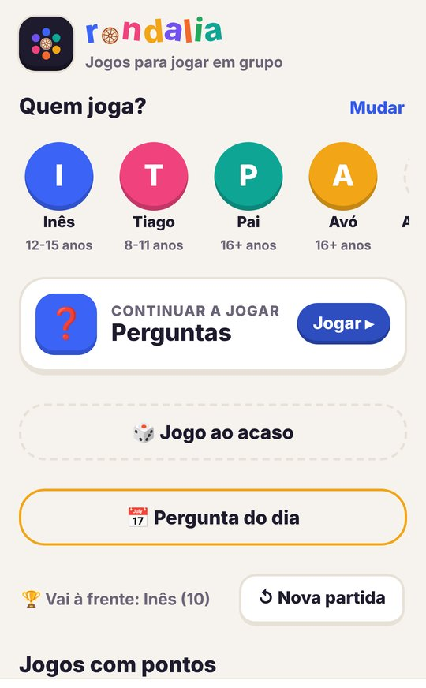
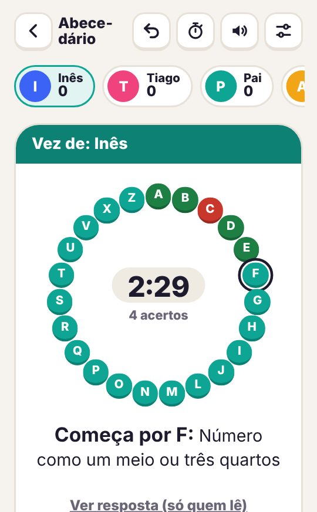
Os jogos
Em português, espanhol, inglês, francês e alemão, com perguntas adaptadas a cada país. Edição de lançamento: agora grátis e completa, sem compras. Descarrega-a já e fica com ela completa para sempre.
Porquê «Rondalia»? Vem de «ronda», a roda: jogar à vez, em círculo. E o «o» do logótipo é uma rota, uma roda de jogo que os antigos romanos gravavam nos degraus dos fóruns e templos para jogar em conjunto. Quase dois mil anos depois, a ideia é a mesma: um tabuleiro, vários jogadores e cada um na sua vez.
Novidades, jogos novos e coleções da época em 𝕏 @Rondalia · 📷 rondalia.app
📱 Descarrega-a no iPhone e iPad
Já está na App Store: grátis e completa, sem anúncios.
🧪 Experimenta a beta no Android
Estamos em teste fechado no Google Play. 1) Escreve-nos para rondalia@mjcstudio.com com o Gmail que usas no teu telemóvel Android e adicionamos-te. 2) Junta-te com uma destas ligações e descarrega a app.
Só para telemóveis Android com Google Play. Usa a mesma conta Gmail que nos deste.
Lexpedition
Rumo certo: passar no teu exame
A Lexpedition transforma a preparação do teu exame oficial de línguas numa travessia pelo mar, e o porto de chegada é a aprovação. Cada lição é uma ilha para conquistar e cada expressão que dominas é uma milha a menos até à meta. Com cinco ou dez minutos por dia, chegarás ao exame com o vocabulário que mais resiste.
Prepara inglês, alemão, francês ou espanhol, do nível A1 ao C2 do Quadro Europeu Comum de Referência. Podes estudar várias ao mesmo tempo.
Verbos com partícula ou preposição (phrasal verbs, trennbare Verben…), expressões idiomáticas e colocações, com frases de exemplo reais.
Escolhe o teu rumo entre ilhas misteriosas, dissipa o nevoeiro e planta a tua bandeira. Sobe de Grumete a Almirante.
Cartões, escolher a partícula, completar espaços e juntar pares, com repetição espaçada para não esqueceres o que aprendeste.
Teste diário com nota, sequência, meta de XP, missões e medalhas. Ideal para criar o hábito.
A app está em espanhol, inglês, francês ou alemão, e os significados podem aparecer traduzidos ou como definição.
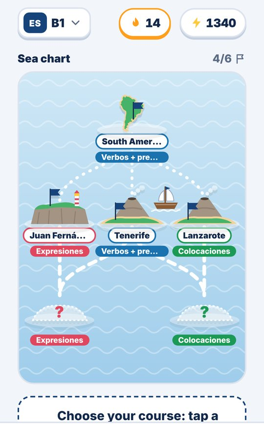
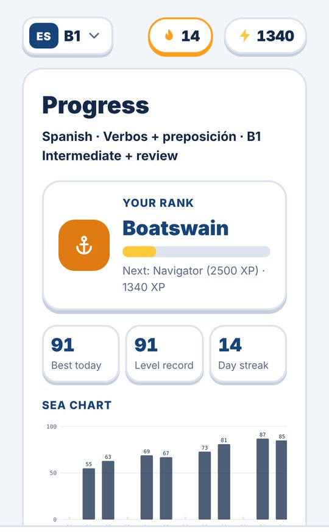
Para qualquer idade: de crianças que preparam o primeiro certificado a adultos. Funciona no telemóvel e no tablet, com vários perfis no mesmo dispositivo. Edição de lançamento: agora grátis e completa, com as quatro línguas e todos os níveis. Descarrega-a já e fica com ela completa para sempre.
📱 Descarrega-a no iPhone e iPad
Já está na App Store: grátis e completa, sem anúncios.
🧪 Experimenta a beta no Android
Estamos em teste fechado no Google Play. 1) Escreve-nos para lexpedition@mjcstudio.com com o Gmail que usas no teu telemóvel Android e adicionamos-te. 2) Junta-te com uma destas ligações e descarrega a app.
Só para telemóveis Android com Google Play. Usa a mesma conta Gmail que nos deste.
O nosso compromisso
- Sem anúncios, nunca.
- Sem contas nem registo.
- Para telemóvel e tablet: Android, iPhone e iPad.
- Não recolhemos dados pessoais: tudo fica guardado no teu dispositivo.
- Adequadas a menores: compras e ligações protegidas com uma pergunta para adultos.
- Compra única opcional, sem subscrições.
Dúvidas ou ideias? Escreve-nos para soporte@mjcstudio.com
Segue-nos no X e no Instagram para saberes as novidades: 𝕏 @MJCStudioApp · 📷 mjcstudio.app · 𝕏 @Rondalia · 📷 rondalia.app
💡 Sugere uma app
Falta-te alguma app para aprender ou jogar? Conta-nos a tua ideia: lemos todas as sugestões.